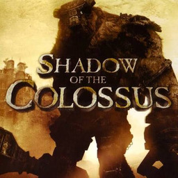

Shadow of the Colossus
Get your copy ready for celosia nx, the native Switch recompilation. Pick your ISO, your
Lossless.dll and the Panda Venom textures: each piece is optional and independent, and everything
is packed into a single ZIP ready to copy to the microSD.
Everything happens in your browser. No file is uploaded anywhere.

The game
The supported version and what the port needs.
Shadow of the Colossus
PlayStation 2 · NTSC-U. The installer checks the disc's executable before copying anything.
Installer
Add the pieces you have. You don't need all of them: the ZIP holds only the ones you pick. celosia nx itself (celosia_nx.nro) is always included.
Game disc
Your Shadow of the Colossus ISO (NTSC-U). It is verified and its files are extracted.
Frame generation
Your original Lossless.dll from Lossless Scaling. The LSFG shaders (quality and
performance) are prepared for the Switch right here, exactly as the port's own tool does.
Panda Venom textures
The folder of the Panda Venom HD pack (PCSX2 format, .dds/.png files).
Guide
Three steps to play.
Create the ZIP
Pick the pieces you have and press “Create ZIP”. Choose where to save it: it is written straight to your disk.
Copy it to the microSD
Extract the ZIP to the root of the microSD. Its contents
already sit inside switch/celosia_nx/; if the folder exists, accept merging.
Launch celosia nx
Start celosia_nx.nro from the homebrew menu through a
game (application mode). LSFG and Panda Venom are turned on in the settings menu.
FAQ
Are my ISO or my DLL uploaded to a server?
No. The page reads the files inside your own browser and writes the ZIP to your disk. There is no server to receive them.
Do I need all three pieces?
No. Each one is independent. You can make a ZIP with just the textures, just LSFG or just the game, and add the rest later with another ZIP: they merge into the same folder.
Which browser do I need?
Chrome or Edge on a computer. They can save a large file straight to disk (the ZIP with the game is about 2.7 GB).
Why does it ask for my own Lossless.dll?
The frame generation shaders belong to Lossless Scaling and cannot be redistributed. The installer converts them from your purchased copy, with the same tool and settings the port uses.
My ISO fails the check.
The port needs the NTSC-U edition (SCUS-97472). Other regions and modified ISOs are not supported.
Need help?
If you have problems with the installation, contact me on Discord.
Message lemasterxar5 on Discord